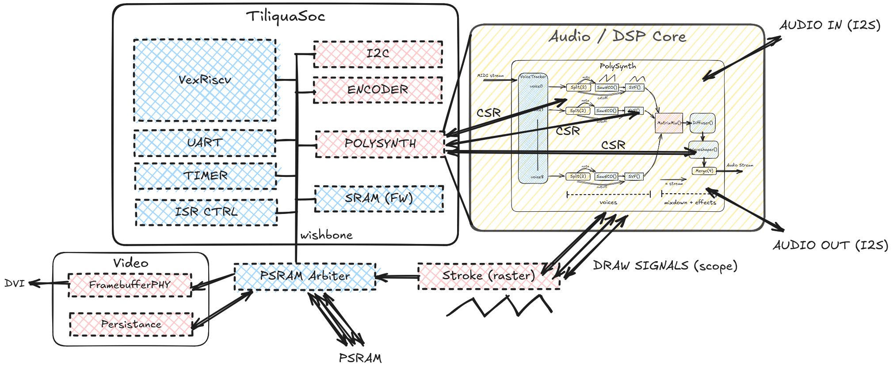

Tutorial 4: SoC/CPU bitstreams
Warning
This tutorial is not finished yet.
More advanced projects in this repository (such as XBEAM) contain audio and video logic, as well as a small CPU and peripheral cores: all connected together to form a SoC (System-on-Chip).
At a very high level, we have a VexiiRiscv softcore running firmware (written in Rust), that interfaces with a bunch of peripherals through CSR registers, over a Wishbone bus.
Background: Tiliqua SoC designs
For Tiliqua projects which contain an SoC alongside the DSP logic, they will often inherit
from tiliqua.TiliquaSoc, which is an Amaranth component which contains:
A CPU instance: VexiiRiscv
Some Peripheral cores: For UART, I2C, SPI flash and more.
An SoC bus/CSR system: for connecting the CPU to the various peripheral cores - in our case, a Wishbone bus as implemented by amaranth-soc
Some Video / DMA cores: These are special peripheral cores that can directly access the system memory: useful for the video framebuffer, and for hardware-accelerated text/line drawing.
Build infrastructure for automatically generating a PAC (Rust register declarations) from the SoC layout, building your custom firmware, and integrating it into the final design.
A typical SoC design might look something like this:
{kind=link}
As shown above, TiliquaSoc may form the heart of a design, however it is
extensible: in the above example, TiliquaSoc has been subclassed and
a new Polysynth peripheral has been added, so that the CPU can see
and tweak properties of a custom DSP pipeline.
Building
Warning
Before proceeding with the Building and Simulation sections, make sure you have installed the required Rust toolchain: see the last section of Setup.
Assuming all the required dependencies are installed, building an SoC bitstream is no different to other types of bitstreams. For example, to build xbeam and create a flashable archive:
$ pdm xbeam build
Note
Many of these examples are quite large, so they can take a while (1-2 minutes) to synthesize and route.
This one-line command hides some complexity. Under the hood, it will:
Instantiate the gateware design
Create an
.svffile from it, which details every register in the SoC that the CPU should have access to.Turn this into a Rust PAC (peripheral access crate) using
svd2rustandform: register definitions that our Rust firmware can use.Compile our Rust firmware against the freshly-created PAC and package it into a flat binary which can be written to the SPI flash.
Elaborate the gateware design, send it through the synthesis flow.
Package the bitstream and firmware together into a flashable bitstream archive.
As with other bitstreams, you may want to add some flags depending on what you want. For example, to switch to 192kHz sampling and force the video mode to always be 1080p30:
$ pdm xbeam build --fs-192khz --modeline 1920x1080p30
Flashing, Logs
This can then be flashed straight to a bitstream slot as previously seen. Sometimes, you’ll want to see the serial traffic emitted by the CPU in info! or other logging statements, for example:
# Open the RP2040 serial port in one terminal, use whatever serial client you like
$ picocom -b 115200 /dev/ttyACM0
# In another terminal, flash the bitstream
$ pdm flash archive build/xbeam-r5/xbeam*.tar.gz --slot 6 --noconfirm
# First, you'll see a bunch of logs from the bootloader.
# On selecting this bitstream, you'll see the logs from loading and then running it.
Faster builds - only updating firmware
As the synthesis flow can take a long time to complete, it is annoying to have to wait for this to complete when you are only changing the firmware. For this reason, if you have already run a complete bitstream build at least once on any particular SoC bitstream and only want to update the firmware in the bitstream without resynthesizing the entire design, you can use the --fw-only flag:
$ pdm xbeam build --fw-only
This will recompile and repackage the firmware into a new bitstream archive, whilst re-using the last synthesized bitstream for the selected core.
Warning
When using the --fw-only flag, make sure you don’t change any flags compared to those that the original bitstream was synthesized with, unless you’re sure they don’t affect the hardware design. Otherwise your firmware may assume it’s running on a different hardware design to the one it is actually running on!
Parallel builds
In general, yosys and nextpnr are dependent on single-core performance. So, building multiple bitstreams at once will scale well. Some example scripts for building multiple bitstreams in parallel can be found in scripts, for example the following command will build most SoC bitstreams simultaneously:
$ ./scripts/build_bitstreams_soc.sh
This can be useful for testing changes that affect every bitstream, or supplying custom arguments. Any build arguments passed to build_bitstreams_soc.sh will be passed to each individual build invocation.
Simulation
All SoC bitstreams support simulation. This works in the same way as other bitstreams using pdm <core> sim, with the difference that it also performs the required firmware compilation step and puts some bootloader metadata in memory before starting the bitstream, to simulate a healthy launch by the Bootloader. For example:
$ pdm selftest sim --trace-fst --modeline 720x720p60r2
<...>
run verilated binary 'build/obj_dir/Vtiliqua_soc'...
sync domain is: 60000 KHz (16 ns/cycle)
pixel clock is: 39070 KHz (25 ns/cycle)
audio clock is: 12288 KHz (81 ns/cycle)
Loaded bootinfo to PSRAM offset 0xfff000
DVIDriver: frame00.bmp
[INFO] Hello from Tiliqua selftest!
DVIDriver: frame01.bmp
Any prints to the serial port will be sent to the terminal (e.g. [INFO] <...>, and every frame of video will be saved to a bitmap, as the simulation is run. As we have supplied --trace-fst, we will also get a simx.fst dump of every signal in the design, which can be viewed with gtkwave or surfer to debug any part of the design.
TODO
Finish writing this.